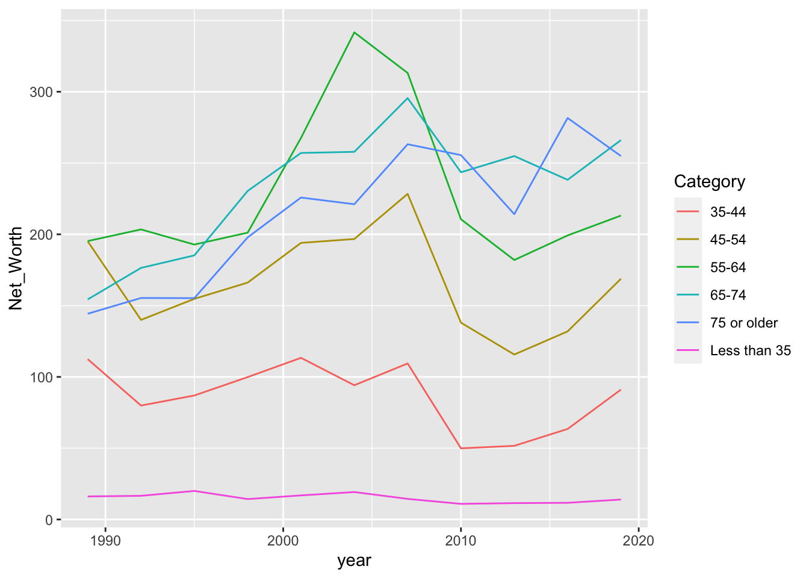

Chapter 14 AMOUNT
14.2 Heatmap: Vaccination
- https://ourworldindata.org/covid-vaccinations
- https://github.com/owid/covid-19-data/tree/master/public/data/vaccinations
library(lubridate)
raw <- read_csv("data/vaccinations.csv")
fullvaccinated <- raw %>% select(country = location, date,
people_fully_vaccinated_per_hundred) %>%
drop_na(people_fully_vaccinated_per_hundred) %>%
mutate(m = floor_date(date, unit = "month")) %>%
group_by(country, m) %>%
arrange(date) %>%
slice(1) %>%
ungroup() %>%
select(-date)
vperc_by_month <- fullvaccinated %>%
spread(m, people_fully_vaccinated_per_hundred, fill=NA) %>%
gather(month, perc, -country) %>%
arrange(country, month) %>%
group_by(country) %>%
arrange(month) %>%
mutate(perc = zoo::na.locf(perc, na.rm = F)) %>%
ungroup() %>%
arrange(country, month) %>%
replace_na(list(perc=0))https://clauswilke.com/dataviz/visualizing-amounts.html
watched <- c("United Arab Emirates", "Japan", "Singapore",
"South Korea", "Taiwan", "Malaysia",
"Hong Kong", "New Zealand", "Thailand",
"Netherlands", "United States", "Israel",
"United Kingdom", "Indonesia", "Thailand", "Philippines")
vperc_by_month %>%
spread(month, perc) %>%
filter(country %in% watched) %>%
mutate(country = reorder(country, -`2022-05-01`)) %>%
gather(month, perc, -country) %>%
ggplot() + aes(month, country, fill=perc) +
geom_tile() + theme_minimal() +
theme(axis.text.x = element_text(angle = 90, vjust = 0.5, hjust=1))
https://clauswilke.com/dataviz/visualizing-amounts.html
vperc_by_month %>%
filter(country %in% watched) %>%
mutate(month = lubridate::as_date(month)) %>%
group_by(country) %>%
mutate(month1 = min((month[perc > 20]))) %>%
ungroup() %>%
spread(month, perc) %>%
mutate(country = reorder(country, -as.numeric(month1))) %>%
select(-month1) %>%
gather(month, perc, -country) %>%
ggplot() + aes(month, country, fill=perc) +
geom_tile() + theme_minimal() +
theme(axis.text.x = element_text(angle = 90, vjust = 0.5, hjust=1))